Jyh-Jing Hwang*†、Runsheng Xu*、Hubert Lin‡、Wei-Chih Hung‡、Jingwei Ji、Kristy Choi、Di Huang、Tong He、Paul Covington、Benjamin Sapp、Yin Zhou、James Guo、Dragomir Anguelov、Mingxing Tan†
Waymo LLC
Transactions on Machine Learning Research（07/2025）掲載、arXiv:2410.23262v3 [cs.CV]、2025年9月23日
OpenReview での査読：https://openreview.net/forum?id=kH3t5lmOU8
翻訳について：原文 PDF は
53_EMMA_2410.23262.pdf（全 31 ページ）。本文、図の説明、図中ラベル、表、脚注、付録を訳出し、論文タイトルと参考文献は原文のまま掲載。図は原図を掲載し、英語ラベルの日本語訳を併記した。数式・数値・引用番号・コードの識別子は原文を維持。原文の記述に関する補足は「訳注」と明示し、本文と区別している。
脚注：* 同等の貢献。‡ 同等の貢献。† 連絡先：Mingxing Tan <tanmingxing@waymo.com>、Jyh-Jing Hwang <jyhh@waymo.com>。
本論文では、自動運転のためのエンドツーエンド・マルチモーダルモデル（End-to-end Multimodal Model for Autonomous driving）である EMMA を紹介する。Gemini のようなマルチモーダル大規模言語モデルを基盤として構築された EMMA は、生のカメラセンサデータを、プランナの軌跡、認識物体、道路グラフ要素など、運転に特化したさまざまな出力へ直接写像する。EMMA は、センサ以外のすべての入力（例：ナビゲーション指示や自車両の状態）と出力（例：軌跡や 3D 位置）を自然言語テキストとして表現することで、事前学習済み大規模言語モデルが持つ世界知識の有用性を最大限に引き出す。このアプローチにより、EMMA はさまざまな運転タスクを統一された言語空間で一括して処理し、タスク固有のプロンプトを用いて各タスクの出力を生成できる。実験的には、nuScenes の動作計画で最先端の性能を達成し、Waymo Open Motion Dataset（WOMD）でも競争力のある結果を得ることで、EMMA の有効性を示す。EMMA はまた、Waymo Open Dataset（WOD）におけるカメラ主体の 3D 物体検出でも競争力のある結果をもたらす。プランナ軌跡、物体検出、道路グラフの各タスクで EMMA を共同学習すると 3 つの領域すべてで改善が得られることを示し、自動運転応用のためのジェネラリストモデルとしての EMMA の可能性を明らかにする。我々の結果が、自動運転モデルのアーキテクチャにおける最先端をさらに発展させる研究を促すことを期待する。
自動運転技術は近年大きく進歩した。自動運転車を遍在的な交通手段とするためには、豊かなシーン文脈の理解と高度な推論・意思決定を必要とする、ますます複雑な実世界のシナリオを走行できなければならない。
歴史的に、自動運転システムはモジュール型のアプローチを採用してきた。これは、認識（Yurtsever et al., 2020; Li et al., 2022b; Lang et al., 2019; Sun et al., 2022; Hwang et al., 2022）、地図作成（Li et al., 2022a; Tancik et al., 2022）、予測（Nayakanti et al., 2023; Shi et al., 2024）、計画（Teng et al., 2023; Lioutas et al., 2022）のための専門化されたコンポーネントから構成される。この設計は個々のモジュールのデバッグや最適化を容易にする一方で、モジュール間の通信が限られるためにスケーラビリティの課題を生む。特に、認識モジュールと行動モジュールの間のような、専門家が設計したモジュール間インタフェースは、対象とするシナリオに基づいてあらかじめ定義されていることが多いため、新しい環境への適応に苦労しうる（Bansal et al., 2019; Jiang et al., 2023; Nayakanti et al., 2023; Seff et al., 2023）。エンドツーエンド自動運転システム（Hu et al., 2023; Zhai et al., 2023; Li et al., 2024）は、センサデータから運転行動を生成することを直接学習する潜在的な解決策として近年登場した。このアプローチはモジュール間の記号的インタフェースを不要にし、生のセンサ入力から運転目的を同時最適化することを可能にする。しかし、これらのシステムは特定の運転タスクに特化し、限られたデータセットで学習されていることが多く、まれなシナリオや新規のシナリオへの汎化能力が妨げられている。
マルチモーダル大規模言語モデル（MLLM）（Gemini Team Google, 2023; Achiam et al., 2023）は、自動運転における AI に有望な新しいパラダイムを提供し、こうした課題への対処に役立つ可能性がある。というのも、ジェネラリストな基盤モデルとしての MLLM は、2 つの重要な領域で優れているからである。（1）一般的な運転ログに含まれる内容を超えた豊かな「世界知識」を提供する、インターネット規模の膨大なデータセットで学習されていること、そして（2）専門化された運転システムでは利用できない思考連鎖（chain-of-thought）推論（Wei et al., 2022; Zhang et al., 2023b）などの技法を通じて優れた推論能力を示すことである。最近の取り組み（Chen et al., 2024b; Tian et al., 2024）は既存の運転システムに MLLM を統合してその能力を拡張することを探求してきたが、我々は MLLM を第一級の構成要素とする自動運転システムの開発を提案する。
我々は、Gemini（Gemini Team Google, 2023）や PaLI（Chen et al., 2024d）のようなマルチモーダル大規模言語モデルの上に、追加の専門化コンポーネントなしで構築された、自動運転のためのエンドツーエンド・マルチモーダルモデル（End-to-End Multimodal Model for Autonomous Driving、EMMA）を紹介する。図1に EMMA フレームワークの概要を示す。EMMA はカメラ画像と、高レベルの運転コマンドや履歴文脈といった視覚以外の入力のためのプレーンテキストを受け付ける。運転タスクを視覚的質問応答（VQA）問題として捉え直すことで、EMMA は Gemini の事前学習済み能力と幅広い世界知識を活用する。タスク固有のプロンプト（他の例は図2を参照）を用いて全タスクの運転ログで EMMA をファインチューニングすると、動作計画のための将来軌跡、認識物体、道路グラフ要素、シーンの意味情報など、さまざまな運転出力を生成する。我々の実験は、この単純な設計にもかかわらず、EMMA がいくつかの計画・認識ベンチマークで高い性能を示すことを明らかにする。さらに、EMMA は道路グラフ推定などの多くの認識タスクについて解釈可能で人間が読める出力を生成でき、自動運転のためのスケーラブルかつ頑健なジェネラリストモデルとして機能しうることがわかった。なお、ここおよび本論文全体で用いる EMMA ジェネラリストモデルとは、自動運転領域の幅広い運転タスクを実行するために大量の運転データで学習・ファインチューニングされた機械学習モデルを指す。
主要な知見を以下にまとめる。
本論文の残りでは、第2章で、自動運転におけるエンドツーエンド動作計画およびジェネラリストタスクのための EMMA の詳細な手法を述べる。第3章では、公開データセットおよび社内データセットでの EMMA の実験結果を示す。最後に、第4章で関連研究を論じる。
これらの有望な結果にもかかわらず、EMMA には限界もある。限界については付録 A.5 節で詳しく論じる。特に、実世界での展開には次の理由による課題がある。（1）カメラ入力を LiDAR やレーダと融合できないことによる 3D 空間推論の限界、（2）閉ループ評価を支えるための、現実的で計算コストの高いセンサシミュレーションの必要性、（3）従来のモデルと比べて増大する計算要求。今後の研究でこれらの課題の理解と対処を進める予定である。
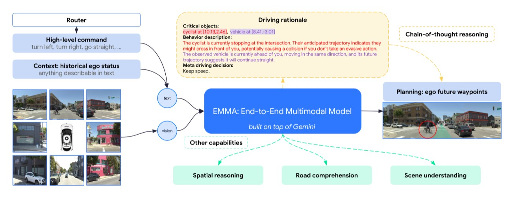
図1：EMMA の概要図。3 つの入力を受け取る（左）。1）ルータからの高レベルコマンド、2）自車両の過去の状態、3）サラウンドビューのカメラ動画である。次にモデルは、動作計画のための自車両の将来軌跡（右）を予測し、それは車両の運転制御信号に変換される。さらに、軌跡を予測する前にモデルにその根拠を説明させることができ（上）、これは思考連鎖推論を通じてモデルの性能と説明可能性の両方を高める。特に、根拠に視覚的グラウンディングを組み込むことで、モデルは重要物体の正確な 3D/BEV 位置も予測する。エンドツーエンド計画に加えて、本モデルの 3 つの追加的な認識能力を強調している（下）。
図中ラベル：Router＝ルータ、High-level command＝高レベルコマンド（turn left, turn right, go straight, ...＝左折、右折、直進、…）、Context: historical ego status＝文脈：自車両の過去の状態（anything describable in text＝テキストで記述できるものなら何でも）、text＝テキスト、vision＝視覚、EMMA: End-to-End Multimodal Model built on top of Gemini＝EMMA：Gemini 上に構築されたエンドツーエンド・マルチモーダルモデル、Driving rationale＝運転の根拠、Critical objects＝重要物体（cyclist at [10.13,2.46]＝[10.13,2.46] の自転車、vehicle at [8.41,-3.01]＝[8.41,-3.01] の車両）、Behavior description＝行動の記述（「自転車は現在交差点で停止している。その予想軌跡は、あなたの前を横切る可能性を示しており、回避行動をとらなければ衝突を引き起こしうる。」「観測された車両は現在あなたの前方にあり、同じ方向に移動しており、その将来軌跡は直進を続けることを示唆している。」）、Meta driving decision＝メタ運転判断（Keep speed＝速度を維持）、Chain-of-thought reasoning＝思考連鎖推論、Planning: ego future waypoints＝計画：自車両の将来ウェイポイント、Other capabilities＝その他の能力、Spatial reasoning＝空間推論、Road comprehension＝道路理解、Scene understanding＝シーン理解
実験では EMMA が Gemini（Gemini Team Google, 2023）や PaLI（Chen et al., 2024d）のようなさまざまな MLLM と互換性があることを示すが、本章では Gemini に基づく主要な EMMA に焦点を当てる。我々は、テキストと視覚の入力が交互に並んだもの（interleaved）を処理してテキスト出力を生成するよう学習された、自己回帰型の Gemini モデルを活用する。
\[ \mathbf{O} = \mathcal{G}(\mathbf{T}, \mathbf{V}) \tag{1} \]
ここで \(\mathcal{G}\) は Gemini モデル、\(\mathbf{O}\) は自然言語出力、\(\mathbf{T}\) は自然言語プロンプト、\(\mathbf{V}\) は画像または動画を表す。言語出力 \(\mathbf{O} = (o_1, o_2, ..., o_n)\) は次トークン予測によって生成される。すなわち、\(n\) 個の出力トークンについて出力確率は \(P(\mathbf{O}|\mathbf{T},\mathbf{V}) = \prod_{i=1}^{n} P(o_i | o_{\lt i}, \mathbf{T}, \mathbf{V})\) と表せる。我々の目標は、\(\mathcal{G}\) を自動運転応用に適応させ、それによって事前学習段階で得られた世界知識を活用することである。
図1に示すように、我々は自動運転タスクを Gemini ベースの EMMA の定式化に写像する。すべてのセンサデータは連結（stitch）された画像または動画 \(\mathbf{V}\) として表現され、すべてのルータコマンド、運転文脈、タスク固有プロンプトは言語プロンプト \(\mathbf{T}\) として表現され、すべての出力タスクは言語出力 \(\mathbf{O}\) として提示される。課題は、入力と出力の多くが、動作計画のためのウェイポイントの BEV（Bird's Eye View、鳥瞰図）位置 \((x, y)\) や 3D ボックスの位置・サイズのように、3D 世界座標を捉える必要があることである。我々は 2 つの表現を検討する。1 つ目は浮動小数点数への直接的なテキスト変換で、\(\mathbf{T}_{\text{coordinates}} = \{(x_i, y_i)\} \approx \texttt{text}(\{(x_i, y_i)\})\) と表され、指定される小数精度は距離の単位と小数点以下の桁数に依存する。RT-2（Brohan et al., 2023）はロボット制御におけるこのアプローチの例である。2 つ目のアプローチは各位置や行動を特殊トークンで表現するもので、\(\mathbf{T}_{\text{coordinates}} = \{(x_i, y_i)\} \approx \texttt{tokenize}(\{(x_i, y_i)\})\) と定式化され、解像度は学習された、あるいは手動で定義された離散化スキームによって決まる。MotionLM（Seff et al., 2023）はこの手法を動き予測に活用している。2 つのアプローチにはそれぞれ長所と短所があることに留意する。我々はテキスト表現を選択する。これにより、テキスト表現は専用のトークン化よりも多くのトークンを生成しうるものの、すべてのタスクが同じ統一された言語表現空間を共有でき、事前学習済み重みからの知識を最大限に再利用できる。
EMMA は、統一的にエンドツーエンドで学習されたモデルを用いて、センサデータから直接、自動運転車の将来軌跡を生成する。生成された軌跡は、次に自動運転車の加速や旋回といった車両固有の制御行動に変換される。EMMA のエンドツーエンドアプローチは人間の運転行動を模倣することを目指しており、2 つの重要な側面に焦点を当てる。（1）第一に、経路計画と意図の決定のためにナビゲーションシステム（例：Google Maps）を利用すること、（2）第二に、時間を通じて滑らかで一貫した運転を確保するために過去の行動を活用することである。
本モデルは、これらの人間の運転行動に合わせるために 3 つの主要な入力を取り込む。
モデルは動作計画のための将来軌跡を生成する。これは同じ BEV 空間における自車両の将来軌跡ウェイポイントの集合として表され、将来の \(T_f\) 個のタイムスタンプについて \(\mathbf{O}_{\text{trajectory}} = \{(x_t, y_t)\}_{t=1}^{T_f}\) であり、出力ウェイポイントもすべてプレーンテキストとして表現される。すべてをまとめると、完全な定式化は次のように表される。
\[ \mathbf{O}_{\text{trajectory}} = \mathcal{G}(\mathbf{T}_{\text{intent}}, \mathbf{T}_{\text{ego}}, \mathbf{V}). \tag{2} \]
次に、図1に示すように、この定式化でエンドツーエンドのプランナ軌跡生成のために Gemini をファインチューニングする。この定式化の 3 つの特徴を強調する。
この一般的な定式化を採用したのは我々が最初ではない――（Li et al., 2024）が、特に自車両の過去の状態を含めることの影響を検討する徹底的な調査を行った――が、我々の貢献は、この定式化を自動運転のための MLLM に特化して適応させた点にある。我々の自己教師ありアプローチは、時空間的なシーン分解による再構成（Yang et al., 2023）、世界モデリング（Zhang et al., 2023a）、あるいは同時動き予測（Wagner et al., 2024）を探求する他の注目すべき手法と並ぶものである。この自己教師ありの基盤を超えて、以降の節では、推論を組み込むことや、人手ラベルまたは自動ラベルを用いたジェネラリストな設定を構築することによる EMMA の強化を探求する。
思考連鎖プロンプティング（Wei et al., 2022）は、MLLM の推論能力を高め、説明可能性を向上させる強力な手段である。EMMA では、最終的な将来軌跡ウェイポイント \(\mathbf{O}_{\text{trajectory}}\) を予測する際に、モデルに判断の根拠 \(\mathbf{O}_{\text{rationale}}\) を明示させることで、エンドツーエンドのプランナ軌跡生成に思考連鎖推論を組み込む。
我々は運転の根拠を階層的に構成し、粗いものから細かいものへと 4 種類の情報を段階的にたどる。
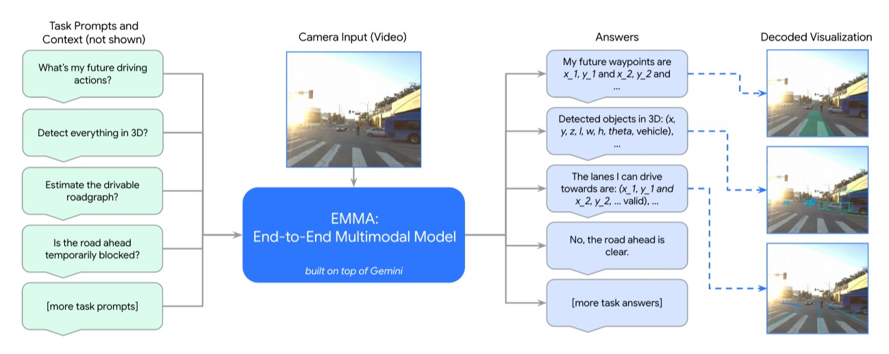
図2：EMMA ジェネラリストの図解。タスクプロンプト（左）から始まり、EMMA は対応するテキスト予測（中央右）を生成し、それを目的の出力形式にデコードして、入力画像に重ねて可視化できる（右）。EMMA ジェネラリストは非常に汎用性が高く、エンドツーエンド動作計画、物体検出、道路グラフ推定、シーン理解の Q&A など、幅広い運転関連タスクを実行できる。回答テキスト中の斜体の語は、タスク実行時に実際の値で動的に置き換えられるプレースホルダを表す。
図中ラベル：Task Prompts and Context (not shown)＝タスクプロンプトと文脈（図示せず）、What's my future driving actions?＝私の将来の運転行動は？、Detect everything in 3D?＝すべてを 3D で検出して、Estimate the drivable roadgraph?＝走行可能な道路グラフを推定して、Is the road ahead temporarily blocked?＝前方の道路は一時的に塞がれているか？、[more task prompts]＝［その他のタスクプロンプト］、Camera Input (Video)＝カメラ入力（動画）、Answers＝回答、My future waypoints are x_1, y_1 and x_2, y_2 and ...＝私の将来ウェイポイントは x_1, y_1 と x_2, y_2 と…、Detected objects in 3D: (x, y, z, l, w, h, theta, vehicle), ...＝3D で検出された物体：(x, y, z, l, w, h, theta, vehicle), …、The lanes I can drive towards are: (x_1, y_1 and x_2, y_2, ... valid), ...＝私が走行できる車線は：(x_1, y_1 と x_2, y_2, … valid), …、No, the road ahead is clear.＝いいえ、前方の道路は空いている、[more task answers]＝［その他のタスク回答］、Decoded Visualization＝デコード結果の可視化
運転の根拠のキャプションは追加の人手ラベルなしに自動化ツールを用いて生成されており、データ生成パイプラインのスケーラビリティが確保されている点を強調する。具体的には、既製の認識・予測エキスパートモデルを活用して重要エージェントを特定し、その後、慎重に設計された視覚およびテキストのプロンプトを用いて Gemini モデルでシーンとエージェントの行動の記述を生成する。メタ運転判断は、自車両の正解軌跡を分析するヒューリスティックなアルゴリズムを用いて計算される。
学習時と推論時の両方で、モデルは将来ウェイポイントを予測する前に運転の根拠の 4 つの構成要素すべてを予測する。すなわち、
\[ (\mathbf{O}_{\text{rationale}}, \mathbf{O}_{\text{trajectory}}) = \mathcal{G}(\mathbf{T}_{\text{intent}}, \mathbf{T}_{\text{ego}}, \mathbf{V}). \tag{3} \]
ここで \(\mathbf{O}_{\text{rationale}}\) は運転の根拠に関する (R1, R2, R3, R4) の順序付きテキスト出力を表す。経験的に、モデルの収束後には \(\mathbf{O}_{\text{rationale}}\) と \(\mathbf{O}_{\text{trajectory}}\) の予測順序が品質に有意な差をもたらさないことを観察している。これは、時間的制約の厳しい応用では \(\mathbf{O}_{\text{trajectory}}\) を先に予測し、推論時に早期停止を適用できることを示唆している。
エンドツーエンド動作計画は究極の中核タスクであるが、包括的な自動運転システムには追加の能力が必要である。具体的には、3D 世界を知覚し、周囲の物体、道路グラフ、交通状況を認識しなければならない。この目標を達成するため、我々は EMMA を、学習データの混合（training mixture）を通じて複数の運転タスクを扱えるジェネラリストモデルとして定式化する。
我々の視覚言語フレームワークは、センサ以外のすべての入力と出力をプレーンテキストとして表現し、他の多くの運転タスクを取り込むのに必要な柔軟性を提供する。LLM で確立された手法であるインストラクションチューニングを用い、式1の入力 \(\mathbf{T}\) にタスク固有プロンプトを含めて全タスクを一括で共同学習する。これらのタスクを 3 つの主要カテゴリ、すなわち空間推論、道路グラフ推定、シーン理解に整理する。
空間推論とは、空間内の物体とその関係について理解し、推論し、結論を導く能力である。これにより、自動運転システムは安全な走行のために周囲の環境を解釈し、それと相互作用できる。
空間推論における我々の主な焦点は 3D 物体検出である。Pix2Seq（Chen et al., 2022a）に従い、出力 3D バウンディングボックスを \(\mathbf{O}_{\text{boxes}} = \texttt{set}\{\texttt{text}(x, y, z, l, w, h, \theta, cls)\}\) と定式化する。ここで \((x, y, z)\) は車両座標系における中心位置、\(l, w, h\) はボックスの長さ・幅・高さ、\(\theta\) は方位角、\(cls\) はテキストによるクラスラベルである。7D ボックスは、各次元を空白で区切り、小数点以下 2 桁の浮動小数点数を書くことでテキストに変換する。
次に、検出タスクを「detect every object in 3D（3D ですべての物体を検出せよ）」のような固定プロンプト \(\mathbf{T}_{\text{detect\_3D}}\) を用いて次のように表す。
\[ \mathbf{O}_{\text{boxes}} = \mathcal{G}(\mathbf{T}_{\text{detect\_3D}}, \mathbf{V}). \tag{4} \]
\(\mathbf{O}_{\text{boxes}}\) は順序のないボックスの集合であるが、自己回帰型言語モデルからの予測は常に順序を持つ。Pix2Seq（Chen et al., 2022a）の知見とは異なり、3D バウンディングボックスを深度でソートすると検出品質が向上することがわかった。
道路グラフ推定は、意味的要素（例：車線標示、標識）や物理的特性（例：車線の曲率）を含む、安全運転のための重要な道路要素の特定に焦点を当てる。これらの道路要素の集まりが道路グラフを形成する。例えば、車線セグメントは（a）車線が交差点・合流・分岐に出会う箇所のノードと、（b）交通の方向に沿ったこれらのノード間のエッジで表される。完全な道路グラフは、そのようなポリラインセグメントの多数から構成される。
各ポリライン内のエッジは有向であるが、各ポリラインは他の要素に対して必ずしも一意の順序を持たない。これは物体検出（例：（Carion et al., 2020; Chen et al., 2022a））と類似している。物体検出では、各ボックスは順序付けられた属性（左上隅、右下隅）で定義されるが、ボックス間の相対的な順序は必ずしも存在しない。ポリライングラフを Transformer でモデル化する既存研究がいくつかあり（Yuan et al., 2024; Liao et al., 2024a;b; 2023; Ding et al., 2023; Qiao et al., 2023; Liu et al., 2023; Li et al., 2022a）、言語モデルとの類似点を共有している。
EMMA における一般的なモデリングの定式化は次のとおりである。
\[ \mathbf{O}_{\text{roadgraph}} = \mathcal{G}(\mathbf{T}_{\text{estimate\_roadgraph}}, \mathbf{V}). \tag{5} \]
ここで \(\mathbf{O}_{\text{roadgraph}}\) はウェイポイントとして表されたテキスト符号化された道路グラフ、\(\mathbf{T}_{\text{estimate\_roadgraph}}\) はモデルに道路グラフの予測を求めるプロンプト、\(\mathbf{V}\) は周囲の画像を表す。
我々は特に走行可能な車線、すなわちシーン内で自車両が向かって走行できる車線の予測に焦点を当てる。これらは、同じ交通方向の隣接車線と、現在の自車線から分岐する車線である。\(\mathbf{O}_{\text{roadgraph}}\) を構成するために、（a）車線を順序付けられたウェイポイントの集合に変換し、（b）これらのウェイポイントの集合をテキストに変換する。交通方向と曲率の両方を表現するには、サンプル順に並べたウェイポイントを用いるのが有益である。検出と同様に、車線をおおよその距離で順序付けると予測品質が向上することもわかった。ポリラインのテキスト符号化の例は "(x1,y1 and... and xn,yn);..." であり、"x,y" は小数点以下 2 桁の精度を持つ浮動小数点のウェイポイント、";" はポリラインのインスタンスを区切る。
シーン理解タスクは、運転に関係しうるシーン全体の文脈についてのモデルの理解をテストする。例えば、道路は工事、緊急事態、その他の出来事によって一時的に塞がれることがある。こうした閉塞をタイムリーに検出し、安全に迂回することは自動運転車の円滑かつ安全な運行を確保するうえで不可欠であるが、閉塞があるかどうかを判断するにはシーン内の複数の手がかりが必要となる。我々は、次の定式化を用いて、本モデルがこの一時的閉塞検出タスクでどのように機能するかに焦点を当てる。
\[ \mathbf{O}_{\text{temporary\_blockage}} = \mathcal{G}(\mathbf{T}_{\text{temporary\_blockage}}, \mathbf{T}_{\text{road\_user}}, \mathbf{V}), \tag{6} \]
ここで \(\mathbf{O}_{\text{temporary\_blockage}}\) は潜在的な閉塞を知らせるモデル出力、\(\mathbf{V}\) は周囲の画像、\(\mathbf{T}_{\text{road\_users}}\) は前方の道路上のすべての物体、\(\mathbf{T}_{\text{temporary\_blockage}}\) はテキストプロンプト "is the road ahead temporarily blocked?"（前方の道路は一時的に塞がれているか？）を表す。（訳注：式(6)の添え字は road_user、本文では road_users と表記が揺れている。）
我々の統一的な視覚言語の定式化により、単一のモデルで複数のタスクを同時に学習でき、推論時にはタスクプロンプト \(\mathbf{T}_{\text{task}}\) を単純に変えるだけでタスク固有の予測が可能になる。この学習手順は単純かつ柔軟である。
各タスクについて、\(|\mathbf{D}_{\text{task}}|\) 個の学習例を含むデータセット \(\mathbf{D}_{\text{task}}\) を構築する。各学習反復では、利用可能なデータセットからバッチをランダムにサンプリングし、特定のデータセットから例を選ぶ確率はデータセットのサイズに比例させる。すなわち、\(|\mathbf{D}_{\text{task}}| / \sum_t |\mathbf{D}_{\text{t}}|\) である。\(e\) エポック学習するために、総学習反復数を \(e \times \sum_t |\mathbf{D}_{\text{t}}|\) に設定し、タスク間の学習比率が相対的なデータセットサイズによって決まるようにする。最適な学習比率は、タスクの複雑さ、タスク間の相関、タスク間の転移可能性の程度など、いくつかの要因に影響される。
我々の実験結果は、複数タスクにわたって学習したジェネラリストモデルが、単一タスクで学習した各スペシャリストモデルを一貫して上回ることを示している。これは、知識転移の強化、汎化の向上、効率の増大というジェネラリストアプローチの利点を浮き彫りにしている。
我々の実験は主に Gemini 1.0 Nano-1（Gemini Team Google, 2023）に基づいており、PaLI（Chen et al., 2024d）に基づく EMMA の派生版についても追加の結果を示す。まず 3.1 節で、さまざまな実験に用いた主要なデータセットを要約する。次に 3.2 節で、2 つの公開データセットにおけるエンドツーエンドのプランナ軌跡生成の結果を示す。続いて 3.3 節で、社内データセットで実験を行い、思考連鎖とデータのスケーリングの影響を調べる。3.4 節は 3D 物体検出の実験に焦点を当てる。ジェネラリストモデルの共同学習の結果は 3.5 節にまとめる。最後に 3.6 節で、困難なロングテールシナリオにおける EMMA の能力を際立たせる視覚的な結果を紹介する。
EMMA をどのように検証するかの実験の詳細に入る前に、本節で主要なデータセットを要約する。全体として、3 つの公開データセット、nuScenes（Caesar et al., 2020）、Waymo Open Motion Dataset（WOMD）（Chen et al., 2024a）、Waymo Open Dataset（WOD）（Sun et al., 2020）を活用する。また、エンドツーエンド動作計画、3D 検出、道路グラフ推定のための 3 つの大規模社内データセットも構築した。データセットのサイズを表1にまとめる。
nuScenes データセット（Caesar et al., 2020）は、評価のための包括的な自動運転車のセンサスイートを提供する。各 20 秒にわたる 1,000 シーンからなり、合わせて視野 360 度をカバーする 6 台のカメラからの情報を含む。
WOMD データセットは、各 20 秒続く 103k の実世界の市街地および郊外の運転シナリオからなる。これらのシナリオはさらに 1.1M の例に分割され、それぞれが 9 秒の窓を表す。1 秒が入力文脈として使われ、残りの 8 秒が予測対象となる。このデータセットには、信号の状態や車線の特性などの詳細な地図特徴と、位置、速度、加速度、バウンディングボックスなどのエージェントの状態が含まれる。
| データセット名 | 総運転時間 | 学習例の数 |
|---|---|---|
| nuScenes (Caesar et al., 2020) | 6 | 18,686 |
| WOMD (Chen et al., 2024a) | 572 | 487,061 |
| 社内動作計画データセット | 203,117 (355x) | 24,374,046 (50x) |
| WOD (Sun et al., 2020) | 6 | 158,081 |
| 社内検出データセット | 6250 | 11,765,140 |
| 社内道路グラフデータセット | 64,135 | 8,304,671 |
表1：主要な学習データセットの規模の要約。この表は、3 つの公開データセット（nuScenes、WOMD、WOD）と、データのスケーリングおよびジェネラリストとしての特性の研究に活用した 3 つの大規模社内データセットの規模を詳述する。
大規模社内動作計画データセットを構築した。これは各 30 秒の実世界の運転シナリオを 2,400 万以上含む。これは WOMD や他のいかなる公開運転データセットよりもおよそ 355 倍大きい。この膨大な規模を効率的に活用するため、シナリオごとに 1 フレームだけをサンプリングし、2,400 万の多様な学習例を得る。このアプローチは、計算効率を維持しつつデータセットの多様性を最大化する。
また、それぞれ 1,200 万例と 800 万例からなる、検出タスクと道路グラフタスクのための 2 つの別個の大規模社内データセットも構築した。検出データセットでは多様な物体を含むシナリオを優先し、それらのシナリオから 3 秒ごとに 1 例をサンプリングした。一方、道路グラフデータセットは多様なシナリオと地理的位置に焦点を当てるため、動作計画データセットに合わせて 30 秒ごとに 1 例をサンプリングする。
最後に、カメラベースの 3D 物体検出タスクを公開 WOD ベンチマーク（Sun et al., 2020; Hung et al., 2024）でも検証する。このベンチマークは 20 秒のシーンを 1150 個提供し、それぞれさまざまな市街地および郊外の環境からの、綿密に同期・較正された高品質な LiDAR、カメラ、3D ボックスのデータを提供する。
2 つの公開データセット、WOMD（Chen et al., 2024a）と nuScenes データセット（Caesar et al., 2020）でエンドツーエンドのプランナ軌跡生成の実験を行う。特に断らない限り、EMMA は式2のような最も単純なエンドツーエンドのプランナ軌跡生成の定式化で学習される。すなわち、カメラ画像、自車両の履歴、運転意図が与えられたとき、モデルは一定の時間範囲にわたる自車両の将来ウェイポイントを予測するよう求められる。
公正な比較のため、設定を WOMD に合わせる。さらに、最先端の動き予測モデルである MotionLM（Seff et al., 2023）と Wayformer（Nayakanti et al., 2023）を社内で強化した版を再現・適応し、プランナのベースラインとする。これらのベースラインモデルには、追加入力として高レベルのコマンド意図を加えている。
表2に示すように、Gemini の事前学習済み重みを用いて同じデータセットで学習した場合、本モデルは MotionLM ベースラインを上回る。我々の超大規模社内データセットで事前学習した場合（EMMA+ と表記）、本モデルは MotionLM と Wayformer の両方を上回る。完全版の EFM+（w/ CoT）は、5 秒の予測範囲において従来の最先端モデルを 13.5% と大幅に上回る。（訳注：「EFM+」は原文のまま。表2の「EMMA+ (w/ CoT)」を指すと考えられる。）また、EMMA の手法をオープンソースの MLLM である PaLI-X（Chen et al., 2024d）にも適用し、EMMA†（PaLI）と表記する。EMMA は大量の学習データがあれば異なる MLLM にわたってよく汎化し、（1 秒と 3 秒で）従来の最先端ベースラインよりも良い品質をもたらすことを示す。
| 手法 | L2 (m) 1s | L2 (m) 3s | L2 (m) 5s |
|---|---|---|---|
| MotionLM* (Seff et al., 2023) | 0.045 | 0.266 | 0.696 |
| Wayformer* (Nayakanti et al., 2023) | 0.046 | 0.252 | 0.628 |
| EMMA† (based on PaLI) | 0.034 | 0.274 | 0.797 |
| EMMA+† (based on PaLI) | 0.031 | 0.239 | 0.680 |
| EMMA | 0.032 | 0.248 | 0.681 |
| EMMA (w/ CoT) | 0.030 | 0.241 | 0.664 |
| EMMA+ | 0.030 | 0.225 | 0.610 |
| EMMA+ (w/ CoT) | 0.027 | 0.203 | 0.543 |
表2：社内計画ベンチマークにおけるエンドツーエンド動作計画の実験。CoT は思考連鎖推論（式3）を備えることを表す。EMMA+ は異なる予測時間範囲のすべてで最良の品質を達成する。EMMA† と EMMA+† はベースモデルとして PaLI-X（Chen et al., 2024d）を用いることを表し、デフォルトの EMMA と EMMA+ はベースモデルとして Gemini を用いる。*強化・再現したベースライン。（訳注：本文 3.2.1 節では本表を WOMD での結果として参照しているが、キャプションは「社内計画ベンチマーク」となっている。原文のまま訳出した。）
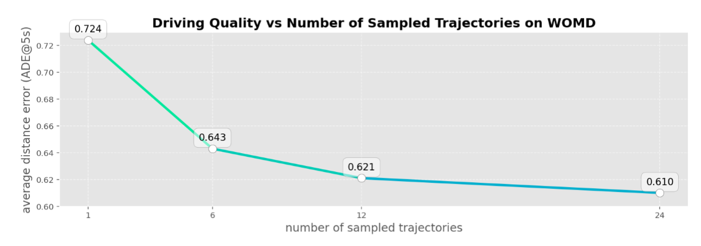
図3：サンプリングする軌跡の数に関するアブレーション研究。サンプリングする軌跡が増えるほど ADE@5s で測った品質も向上するが、12 サンプル以上では効果が逓減する。
図中ラベル：Driving Quality vs Number of Sampled Trajectories on WOMD＝WOMD における運転品質とサンプリング軌跡数の関係、average distance error (ADE@5s)＝平均距離誤差（ADE@5s）、number of sampled trajectories＝サンプリングした軌跡の数
MotionLM と EMMA の入力の違いに注意されたい。MotionLM は、エージェントの位置履歴、エージェント間の相互作用、道路グラフ、信号の状態を入力として受け取る。これらのエージェントのボックスは、過去と未来の両方の観測を見る専門化されたオフボード認識モデルによって生成され、そのモデルは慎重にキュレーションされた大量の人手ラベルで学習されている。道路グラフは走行セグメント全体を用いて手動で生成され、すべての入力は優れた深度推定を持つ LiDAR データを多用している。これとは対照的に、EMMA は（Gemini の事前学習済み重みを活用する以外は）ラベルや追加モデルを一切必要とせず、カメラ画像と自車両の履歴のみを入力とする。
推論時には、複数の候補から最終軌跡をサンプリングすることが最終性能に重要な役割を果たす。MotionLM と Wayformer はいずれも 192 本の候補軌跡を生成し、それらは k-means クラスタリングを用いて 6 つのクラスタに集約され、その確率に従って最終出力として選ばれる 6 本の代表軌跡となる。公平を期すため、我々も Top-\(K\) デコーディング戦略を用いて最大 \(K = 24\) まで複数の軌跡をサンプリングする。次に、すべての軌跡間のペアごとの L2 距離を計算し、平均 L2 距離が最小のものを最終予測軌跡として選択する。これはすべての予測の中の「中央値」軌跡とみなすことができる。図3に示すように、サンプリングする軌跡の数が ADE に与える影響を調べる。結果は、複数の軌跡からサンプリングすると ADE が顕著に改善するが、その効果は逓減することを示している。
| 手法 | 自己教師あり？ | L2 (m) 1s | L2 (m) 2s | L2 (m) 3s | Avg L2 (m) |
|---|---|---|---|---|---|
| UniAD (Hu et al., 2023) | ✗ | 0.42 | 0.64 | 0.91 | 0.66 |
| DriveVLM (Tian et al., 2024) | ✗ | 0.18 | 0.34 | 0.68 | 0.40 |
| VAD (Jiang et al., 2023) | ✗ | 0.17 | 0.34 | 0.60 | 0.37 |
| OmniDrive (Wang et al., 2024a) | ✗ | 0.14 | 0.29 | 0.55 | 0.33 |
| Ego-MLP* (Zhai et al., 2023) | ✓ | 0.15 | 0.32 | 0.59 | 0.35 |
| BEV-Planner (Li et al., 2024) | ✓ | 0.16 | 0.32 | 0.57 | 0.35 |
| EMMA (random init) | ✓ | 0.15 | 0.33 | 0.63 | 0.37 |
| EMMA | ✓ | 0.14 | 0.29 | 0.54 | 0.32 |
| EMMA+ | ✓ | 0.13 | 0.27 | 0.48 | 0.29 |
表3：nuScenes（Caesar et al., 2020）におけるエンドツーエンド動作計画の実験。EMMA (random init) はランダムに初期化したモデル、EMMA は Gemini から初期化したモデル、EMMA+ は超大規模社内データで事前学習したモデルを表す。EMMA は nuScenes の計画ベンチマークで最先端の性能を達成し、教師あり（認識ラベルおよび／または人手ラベルを使用）の従来手法を 6.4%、自己教師あり（追加ラベルなし）の従来手法を 17.1% 上回る。*Ego-MLP の結果は BEV-Planner における再現版から引用した。
実験では、計画評価のための nuScenes の標準プロトコルに従う。すなわち、2 秒間の履歴データに基づいて次の 3 秒間の将来の運転行動を予測する。確立されたベースライン手法、特に BEV-Planner（Li et al., 2024）に合わせ、1 秒、2 秒、3 秒の時間範囲での L2 誤差で計画品質を測定する。
式2のような最も単純なエンドツーエンドのプランナ軌跡生成の定式化（自己教師あり、思考連鎖推論もジェネラリスト学習もなし）で EMMA を学習・評価する。表3に示すように、我々の自己教師あり EMMA は nuScenes の計画で最先端の結果を達成し、従来の教師あり（中間的な認識ラベルおよび／または人手ラベルを使用）手法および自己教師あり（追加ラベルなし）手法をすべて上回る。同じ自己教師ありの設定の下で、EMMA は平均 L2 指標で BEV-Planner（Li et al., 2024）を 17.1% 上回る。中間的な認識の人手ラベルを多用する OmniDrive（Wang et al., 2024a）と比べても、我々の自己教師あり EMMA は平均 L2 指標を 12.1% 改善する。
WOMD とは異なり、複数の軌跡をサンプリングしても有意な改善は得られなかった。これは、より単純な運転シナリオにおける nuScenes の予測時間範囲の短さ（3 秒）によるものと推測する。そのため、結果には top-1 予測のみを報告する。
本節では、社内データセットにおける思考連鎖を伴うエンドツーエンド計画の研究を示す。このデータセットは 2,400 万のシナリオを含み、公開されているどの自動運転データセットよりも桁違いに大きい。モデルは 2 秒間の履歴を受け取り、5 秒先までの運転行動を予測する。
表4に、エンドツーエンド計画に適用した思考連鎖推論の実験結果を示す。思考連鎖の定式化（式3）を採用することで、式2で詳述した標準的なエンドツーエンド計画アプローチに対して 6.7% の顕著な改善を達成する。また、根拠の各構成要素の寄与を分析するアブレーション研究も行う。その結果、運転のメタ判断と重要物体の特定はいずれも性能を大きく向上させ、それぞれ 3.0% と 1.5% の改善に寄与することが明らかになった。これらの構成要素を組み合わせると、改善はさらに大きくなる。一方、シーン記述は運転性能に対しては中立的な影響しか持たないが、モデルの説明可能性を高める。これらの結果は、思考連鎖推論が、特にその構成要素が慎重に選択・統合された場合に、運転性能を意味のある形で向上させうることを示している。
| シーン記述 | 重要物体 | メタ判断 | 行動記述 | ベースラインの e2e 計画に対する相対改善 |
|---|---|---|---|---|
| ✓ | ✗ | ✗ | ✗ | + 0.0% |
| ✗ | ✓ | ✗ | ✗ | + 1.5% |
| ✗ | ✗ | ✓ | ✗ | + 3.0% |
| ✗ | ✓ | ✓ | ✗ | + 5.7% |
| ✗ | ✓ | ✓ | ✓ | + 6.7% |
表4：思考連鎖推論の構成要素に関するアブレーション研究。すべての要素を組み合わせることで、エンドツーエンド計画の品質が最大 6.7% 向上する。特に、運転のメタ判断と重要物体はそれぞれ 3.0% と 1.5% の改善に寄与する。各構成要素の詳細は 2.2 節で述べている。
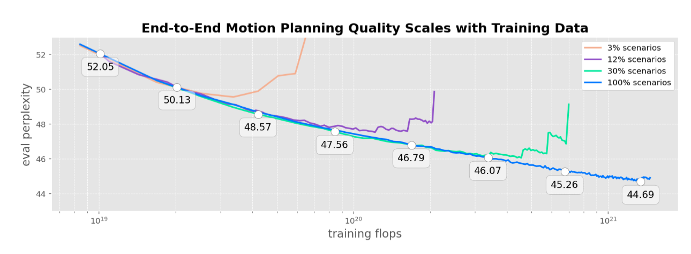
図4：超大規模社内データセットにおける EMMA のデータスケーリング実験。各曲線は、学習ステップが進むにつれてのエンドツーエンド動作計画の評価パープレキシティを表す。x 軸は学習計算量で、浮動小数点演算数（FLOPs）の対数スケールで測る。同じ EMMA モデルを、3% から 100% までの異なる割合でサンプリングした 4 つのサイズのデータセット（色の違いで表示）で学習する。一般に、EMMA はより多くの学習計算量を与えられると過学習に至るまでより良い品質を達成する傾向があるが、小さいデータセットではすぐに過学習する。大規模データセット全体を用いた場合、運転品質はまだ飽和していないことが観察される。
図中ラベル：End-to-End Motion Planning Quality Scales with Training Data＝エンドツーエンド動作計画の品質は学習データとともにスケールする、eval perplexity＝評価パープレキシティ、training flops＝学習 FLOPs、3% / 12% / 30% / 100% scenarios＝シナリオの 3% / 12% / 30% / 100%
また、エンドツーエンド計画について一連のデータスケーリング実験も行い、その結果を図4に示す。より大きな学習セットでモデルを学習すると、過学習する前の評価パープレキシティがより低くなることが観察される。我々の知見は、現在の超大規模データセットをもってしても、EMMA の運転品質はまだ頭打ちになっていないことを示している。
3D 物体検出の性能を、Waymo Open Dataset（Sun et al., 2020）の 3D カメラ主体検出ベンチマークで、縦方向誤差許容（Longitudinal Error Tolerant、LET）マッチング（Hung et al., 2024）を用いて検証する。前節と同様に、EMMA と EMMA+ の 2 つの版を評価する。EMMA+ は社内データセットを用いて 3D 検出タスクで事前学習したものである。定量的な結果は公式テストセットで報告し、図5にまとめる。
我々の知見は、事前学習後の EMMA+ がベンチマークで競争力のある性能を達成することを示している。本モデルは個々の信頼度スコアを持たない検出ボックスの集合を出力するため、適合率–再現率曲線に基づいて計算される LET-3D-AP の代わりに、適合率／再現率を比較する。また、一般に用いられる F1 スコアも比較する。EMMA の F1 スコアは単一の適合率／再現率を用いて計算し、他のモデルの F1 スコアは曲線上の最大の F1 スコア（しばしば F1-max と呼ばれる）を選んで計算する。
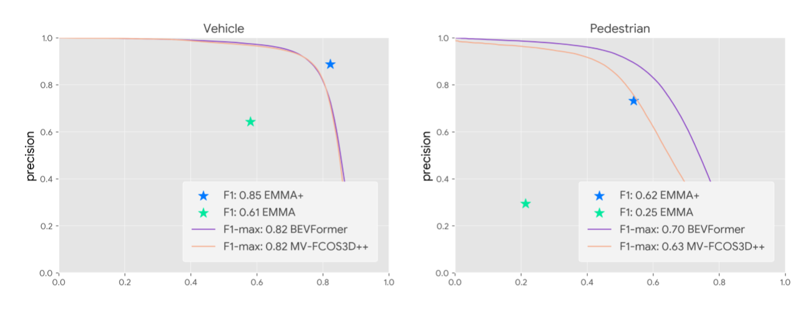
図5：標準の LET マッチング（Hung et al., 2024）を用いた WOD（Sun et al., 2020）におけるカメラ主体 3D 物体検出の実験。EMMA+ は、適合率／再現率と F1 スコアの両方の指標で検出ベンチマークにおいて競争力のある性能を達成する。最先端手法と比較して、同じ再現率で車両の適合率を相対的に 16.3% 向上させ、あるいは同じ適合率で再現率を 5.5% 向上させる。
図中ラベル：Vehicle＝車両、Pedestrian＝歩行者、precision＝適合率（横軸は再現率）、F1: 0.85 EMMA+ 等＝各手法の F1 値、F1-max＝曲線上の最大 F1
図5に性能比較を示す。全般に、EMMA+ は BEVFormer（Li et al., 2022b）などの最先端手法に対して大幅な改善を示し、同じ再現率で車両の適合率を相対的に 16.3% 向上させ、同じ適合率で再現率を 5.5% 向上させる。EMMA+ はまた、従来手法よりも良い F1 スコアを達成する。歩行者クラスの性能も MV-FCOS3D++（Wang et al., 2021）と同等である。さらに、異なる距離範囲にわたる性能の内訳も示し、本モデルが特に近距離で良好に機能することを強調する。我々の結果は、十分なデータと十分に大きなモデルがあれば、マルチモーダルアプローチが 3D 検出の品質において専門化されたエキスパートモデルを上回りうることを示している。
道路グラフ推定は、順序のないポリラインの集まりを予測する複雑なタスクであり、各ポリラインはウェイポイントの系列として表される。道路グラフ予測の品質を 2 つの指標で測定する。（1）車線レベルの適合率と再現率。予測された車線ポリラインと正解の車線ポリラインは、両者の Chamfer 距離が 1 メートル以内である場合に限り真陽性のマッチとする。（2）ピクセルレベルの適合率と再現率。ポリラインを 1 メートル解像度の BEV グリッドにラスタライズし、BEV グリッドを画像として扱ってピクセルごとのマッチングに基づき適合率と再現率を計算する。
2.3 節で論じたように、このタスクにはいくつかの設計上の選択が伴う。1 つは道路グラフのポリラインの表現に関するもので、我々は各車線の始点と終点を定義し、道路の曲率を正確に捉えるために必要に応じて中間点を追加することを選ぶ。もう 1 つの重要な設計上の選択は、モデル学習に用いる目標ラベル系列の構成である。物体検出の文脈における Pix2Seq（Chen et al., 2022a）に着想を得て、効果的な設計上の選択の 1 つは目標をパディングし、ランダムにシャッフルすることである。この手法は、モデルが順序のない出力を扱うのを助け、学習中の早期終了を防ぐ。
図6に、さまざまな設計上の選択に関するアブレーション研究を示す。最良の設計から出発して、以下の各構成を系統的にアブレーションし、その結果生じる品質の低下を評価する。その後、分析から得られた主要な洞察をまとめる。
ポリライン表現：動的サンプリングは固定サンプリングより優れる。単純なポリライン表現は、車線ごとに固定数の疎な制御点、例えば 2 つの端点と曲率を捉えるための固定数の中間点をサンプリングすることである。しかし、より良いアプローチは、車線の曲率と長さに応じてポリラインごとの点の数を動的に調整することだとわかった。ウェイポイントの数ではなくウェイポイントの密度を一定に保つことで、車線構造の複雑さをより正確に捉える表現が得られ、図6に示すように指標に約 40% から 90% の差が生じる。特にカーブが急な区間や車線の長さが異なる区間で、ウェイポイント密度を道路の幾何形状に適応させることにより、車線構造の複雑さをより正確に捉える柔軟な表現を実現する。
ポリライン表現：自車原点に揃えたサンプル間隔は、素朴に揃えたサンプル間隔より優れる。道路グラフは通常グローバル座標系で保存・アクセスされる。つまり、車線の原点や延長は自車両の位置とは無関係である。精度を向上させるには、車線点のサンプルを自車両座標系の原点から始まるよう調整することが不可欠である。具体的には、AV の位置（自車原点）を基準にポリラインの点をサンプリングすることで、グローバル座標系でサンプリングした点を自車座標系へ直接変換する際に生じうる任意のオフセットを回避できる。これにより、予測品質の 25% から 60% の低下を防ぐ。
目標系列の構成：シャッフルした順序付けは任意の順序付けより優れる。ポリラインの目標を、自車両からの端点の距離に基づいてビンに整理し、大まかな全体的順序を与える。例えば、車線を近傍の車線と、接続車線として機能するより遠方の車線とに分類する。学習中は、各距離ビン内でポリラインを動的にシャッフルし、モデルの頑健性とカバレッジを高める。各ビン内でのこの動的シャッフルは、異なる車線構成にわたるモデルの汎化能力を向上させ、より正確な予測につながる。
目標系列の構成：パディングはパディングなしより優れる。Pix2Seq（Chen et al., 2022a）と同様に、早期終了を防ぐために目標をパディングすることが非常に効果的であることがわかった。ポリライン目標の総数をパディングすることに加えて、各ポリライン内の点の数もパディングする。ポリライン内のパディングされた点を表すために "invalid"（無効）トークンを用いる。各ポリラインには、パディングされていない点を含むかどうかを示す最終的な "valid"（有効）または "invalid" トークンも明示的にタグ付けされる。このアプローチは一貫した入力サイズを保証し、学習中のモデルの完全性の維持を助け、途中で切り捨てられるリスクを減らし、より信頼性の高い正確な予測につながる。
目標系列の構成：句読点やその他の意味的に冗長なトークンを加えると品質が向上する。目標系列の構成において、言語のような構造や句読点を用いて目標をグループ化する（例："xy xy;..." の代わりに "(x,y and x,y);..."）ことが有益であることに気づいた。さらに、意味的に冗長なトークンを明示的に含めること――例えば、"valid" マーカーの暗黙の省略に頼るのではなく、パディングされた目標を "invalid" とマークすること――が性能を向上させる。句読点と冗長性を取り入れたこのアプローチにより、車線レベルの指標が最大 10% 向上する。この改善は Gemini の言語関連の事前学習によるものと考える。類似の構造化された表現を活用することで、Gemini は他のタスクにより容易に適応できる。
図7に、一時的閉塞検出のためのシーン理解タスクに関する研究をまとめる。この研究は、これらのシナリオのために特別にキュレーションされた社内データセットに基づいている。この研究では、人間に画像を見せて車線が一時的に塞がれているかどうかを判断させることでベースラインを確立する。回答は「はい」「いいえ」「わからない」のいずれかである。baseline はすべての「わからない」回答を不正解として扱い、baseline+filtering は「わからない」回答を含むすべての例を除外する。これに対し、本モデルはすべての例について「はい」か「いいえ」を予測するようファインチューニングされる。図に示すように、このタスクのみで直接ファインチューニングした素朴なモデルは baseline との比較では良い性能を達成するが、baseline+filtering との比較では下回る。モデルの性能を高めるため、最初の試みとしてこのタスクを道路グラフ推定と共同学習したが、素朴な混合では性能が向上しない。2 つ目の試みは、まずモデルを道路グラフ推定で事前学習し、その後これら 2 つのタスクでファインチューニングすることである。結果は、事前学習が十分に長ければ品質が向上することを示しており、複数のタスクを統合して性能を高めるモデルの能力を示している。
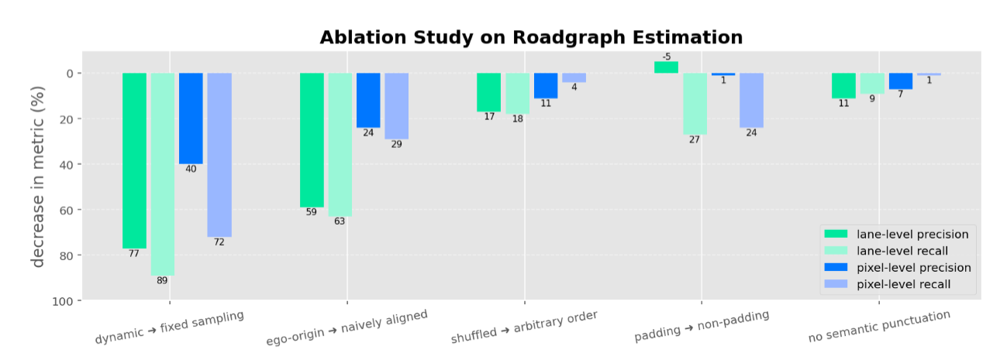
図6：道路グラフ推定に関するアブレーション研究。道路グラフ推定モデルにおける各構成要素の影響を評価するため、各構成をアブレーションし、品質への対応する影響を測定する。車線の曲率と長さに基づく道路グラフのポリラインの動的サンプリング（左端）が最も重要な要因であることが判明し、車線レベルの適合率と再現率に 70% から 90% の大幅な変化をもたらす。対照的に、モデルを言語のような表現、すなわち意味的な句読点（右端）に合わせることの効果はより控えめで、どの指標の適合率と再現率にも \(\lt\)10% の変化しかもたらさない。（訳注：本文 3.4.1 節では動的サンプリングの効果を「約 40% から 90%」としており、本キャプションの「70% から 90%」とは数値が異なる。図ではピクセルレベル適合率の低下が 40 であり、本文の値は全指標の範囲を指すと考えられる。）
図中ラベル：Ablation Study on Roadgraph Estimation＝道路グラフ推定に関するアブレーション研究、decrease in metric (%)＝指標の低下（%）、lane-level precision / recall＝車線レベルの適合率／再現率、pixel-level precision / recall＝ピクセルレベルの適合率／再現率、dynamic → fixed sampling＝動的→固定サンプリング、ego-origin → naively aligned＝自車原点→素朴な位置合わせ、shuffled → arbitrary order＝シャッフル→任意の順序、padding → non-padding＝パディング→パディングなし、no semantic punctuation＝意味的句読点なし
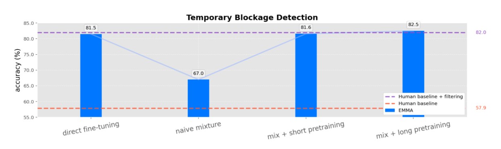
図7：シーン理解の実験。direct fine-tuning はファインチューニング中に一時的閉塞のデータのみを用いることを表す。naive mixture はこのシーンタスクを道路グラフ推定と共同学習することを表す。mix + short pretraining はまず道路グラフ推定で事前学習し、その後両タスクの混合でファインチューニングすることを表す。mix + long pretraining はファインチューニング前により長い事前学習を行うことを表す。素朴なファインチューニングはすでに強力な人間のベースラインに近いが、学習データの混合を伴う長い事前学習によって品質をさらに高められる。
図中ラベル：Temporary Blockage Detection＝一時的閉塞検出、accuracy (%)＝正解率（%）、Human baseline + filtering＝人間のベースライン＋フィルタリング、Human baseline＝人間のベースライン
表5にまとめるように、複数のタスクで共同学習し、その相乗効果を分析することで、EMMA ジェネラリストの開発を探求する。この研究では、エンドツーエンド計画、3D 物体検出、道路グラフ推定の 3 つの中核タスクに焦点を当てる。
3 つのタスクすべてで共同学習すると大幅な改善が得られ、ジェネラリストモデルは単一タスクのモデルを最大 5.5% 上回る。これらの結果はタスク同士の相補的な性質によるものと考える。例えば、モデルが車両の位置を正確に特定できれば、道路グラフ推定は容易になる。同様に、運転品質はエージェント間の相互作用の理解と密接に結びついており、その能力は 3D 物体検出によって強化される。混合を 2 タスクのみに絞っても改善は得られ、特定の組み合わせは他よりも大きな改善をもたらす。例えば、検出性能は運転と共同学習したときに最も向上し、道路グラフ推定も同様に運転と組み合わせたときに最も恩恵を受ける。これは、運転タスクが際立った影響力のある役割を果たし、全体的な性能改善の主要な貢献要因となっていることを示唆している。
| e2e 計画 | 3D 検出 | 道路グラフ | 単一タスクに対する相対改善 | ||
|---|---|---|---|---|---|
| e2e 計画 | 検出 | 道路グラフ | |||
| ✓ | ✓ | - | +1.6% (±1.0%) | +2.4% (±0.8%) | |
| ✓ | ✓ | +1.4% (±2.8%) | +5.6% (±1.1%) | - | |
| ✓ | ✓ | −1.4% (±2.9%) | - | +3.5% (±0.9%) | |
| ✓ | ✓ | ✓ | +1.4% (±2.8%) | +5.5% (±1.1%) | +2.4% (±0.8%) |
表5：ジェネラリストの共同学習実験。（±∗）は標準偏差を示す。複数のタスクで共同学習することにより、EMMA は運転シーンのより広い理解を獲得し、推論時にさまざまなタスクを扱えるようになると同時に、個々のタスクの性能も向上する。特に、ある種のタスクの組み合わせは他よりも大きな恩恵をもたらし、これらのタスクが相補的であることを示唆している。3 つのタスクすべてを一緒に共同学習すると最良の品質が得られる。
これらの知見は、ジェネラリストモデルの追求が今後の研究にとって有望な方向であり、タスク間の相乗効果と性能最適化についてより深い洞察が得られる可能性を示唆している。
視覚的な例をシナリオの種類ごとにまとめる。例 (a)-(d) は、EMMA が道路上のまれな未知の物体や動物と安全に相互作用する様子を示す。例 (e)-(f) は、EMMA が工事区域を通り抜ける様子を取り上げる。例 (g)-(j) は、信号機や交通整理員のいる交差点で EMMA が交通規則に従う様子を示す。例 (k)-(l) は、EMMA がオートバイ運転者のような交通弱者を尊重する様子を強調する。
これらの例を踏まえて、EMMA の次の能力を示す。
結論として、これらのシナリオは、さまざまな困難で多様な運転シナリオと環境において、EMMA が安全かつ効率的に動作する能力を浮き彫りにしている。
（訳注：本章冒頭の段落は原文 15 ページから 19 ページにまたがるため（16〜18 ページは図のみ）、図8〜図10 の後にまとめて掲載する。）
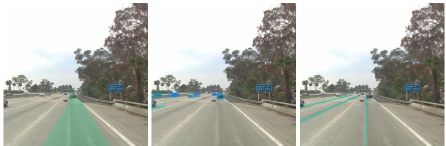
(a) 高速道路にゴミ袋が現れたため、予測軌跡はそれを避けるためにわずかに右へ寄ることを示している。
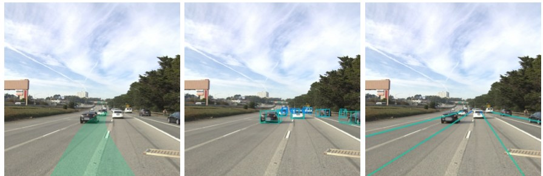
(b) 高速道路にはしごが現れ、予測軌跡はそれを適切に迂回するために左車線へ移ることを示している。
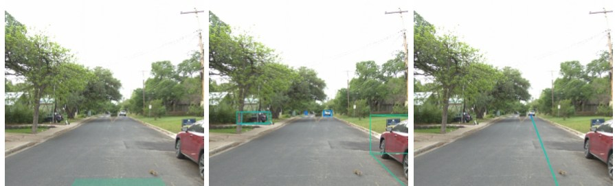
(c) 道路上で小さなリスに遭遇し、予測軌跡はその動物を避けるために本能的に減速する。EMMA はリスを検出するよう明示的には学習されていない点に注意されたい。
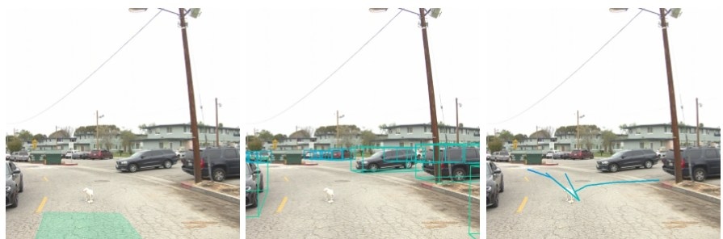
(d) 白い犬が自車線に現れ、本モデルは減速して譲ることを予測する。本モデルはまた、隣接車線や駐車場にある車両を含む周囲の車両も正確に検出している。
図8：EMMA の予測の可視化。各行は 1 つのシナリオと本モデルの予測を含む。エンドツーエンド計画（左）、3D 物体検出（中央）、道路グラフ推定（右）である。
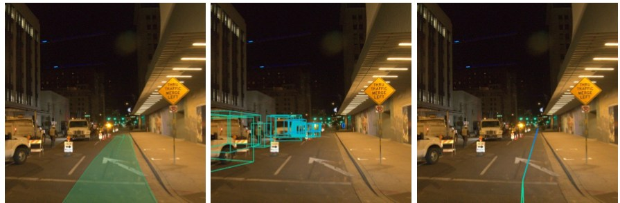
(e) 工事区域が左側の車線を塞いでいるため、予測軌跡は右側を通り抜けることを示しており、道路グラフ推定は塞がれた領域を正しく特定している。
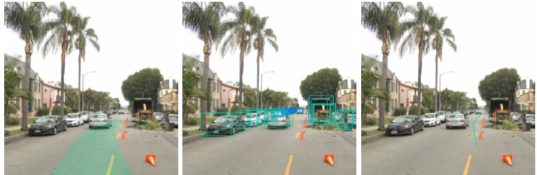
(f) 自車線が工事用コーンで塞がれているため、予測軌跡は対向方向であるにもかかわらず左車線へ移ることを示している。EMMA は閉塞を捉え、迂回を行った。
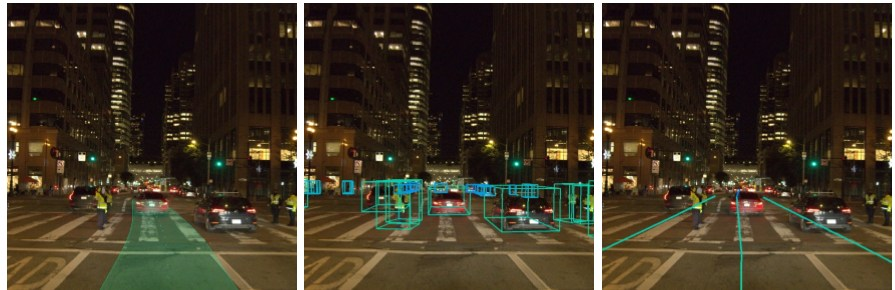
(g) 交通整理員が交差点を通過するよう合図しており、予測軌跡はその指示に沿っている。
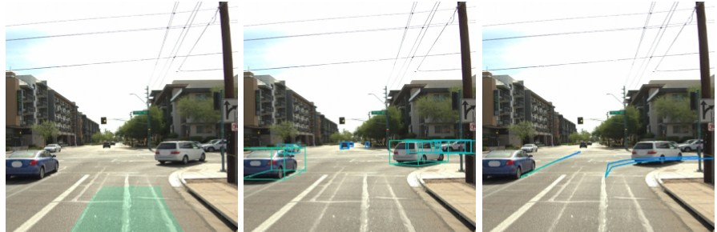
(h) 黄信号の交差点に近づく際、予測軌跡は停止することを示しており、慎重で安全な行動を示している。
図9：EMMA の予測の可視化。各行は 1 つのシナリオと本モデルの予測を含む。エンドツーエンド計画軌跡（左）、3D 物体検出（中央）、道路グラフ推定（右）である。
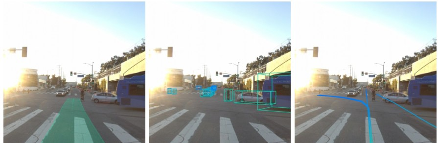
(i) 交差点を横断する際、近くの車両と、自車線を部分的に占有している自転車のために、予測軌跡はわずかに左へ寄る。
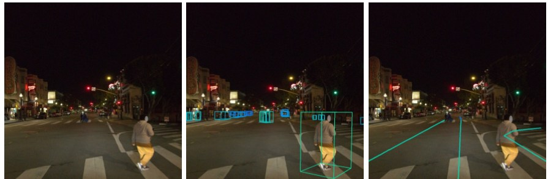
(j) 本モデルは赤信号で辛抱強く待つ運転軌跡を予測する（左）。モデルはまた、周囲の 3D 物体（中央）と車線中心を含む道路グラフ（右）も正確に予測している。
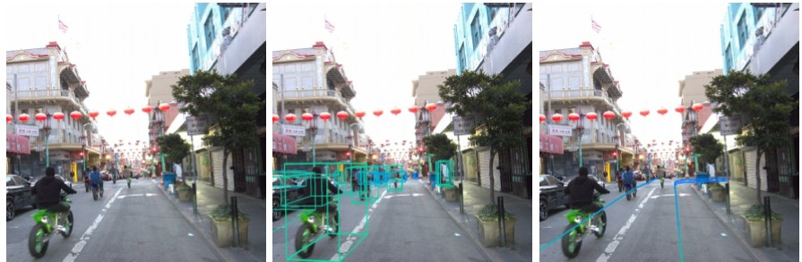
(k) 高速で移動するオートバイの一団が通り過ぎる。予測軌跡は、彼らが安全に通過できるよう一時停止することを示している。特に、オートバイ運転者は本モデルによって正確に識別されている（中央）。
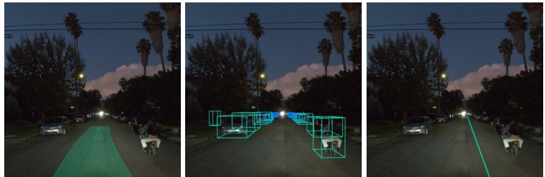
(l) 夜間、狭い車線をバイクが走行しており、右側へ道を譲る。予測軌跡はそれに合わせて調整され、わずかに左へ寄って安全に追い越すよう導く。
図10：EMMA の予測の可視化。各行は 1 つのシナリオと本モデルの予測を含む。エンドツーエンド計画軌跡（左）、3D 物体検出（中央）、道路グラフ推定（右）である。
エンドツーエンド自動運転の研究は豊かな歴史を持ち、ALVINN（Pomerleau, 1988）が浅いニューラルネットワークを用いて制御信号を予測して以来、大きく発展してきた。この分野はさらなる深層学習の進歩の恩恵を受けた。例えば DAVE-2（Bojarski et al., 2016）と ChauffeurNet（Bansal et al., 2019）は、より深いニューラルアーキテクチャを活用し、それぞれ高度な認識モジュールと動作計画モジュールを取り入れた。最近の研究は、マルチモーダル入力（Codevilla et al., 2018; Prakash et al., 2021）、マルチタスク学習（Chitta et al., 2022; Wu et al., 2022）、強化学習（Chekroun et al., 2023; Chen et al., 2021; Kendall et al., 2019; Liang et al., 2018; Toromanoff et al., 2020）、蒸留（Chen et al., 2020; Zhang & Ohn-Bar, 2021; Zhang et al., 2021）を含むよう拡大している。VAD（Jiang et al., 2023; Chen et al., 2024c）、UniAD（Hu et al., 2023）、PARA-Drive（Weng et al., 2024）、GenAD（Zheng et al., 2024）のような統合計画フレームワークは、開ループ環境において計画を従来のモジュールと統合した。合成環境から実世界領域への頑健性、安全性、転移可能性を検証するためのさらなる研究も提案されている。しかし、AD-MLP（Zhai et al., 2023）と BEV-Planner（Li et al., 2024）による最近の知見は、これらの手法がベンチマークでの良好な性能にもかかわらず、自車両の状態に過学習している可能性があることを明らかにした。我々の研究は、ALVINN や DAVE-2 のような初期のエンドツーエンドモデルの単純さを再訪し、それを強力な MLLM で強化するものである。
自動運転のための視覚言語モデルは、エンドツーエンド学習フレームワークを通じて説明可能な運転行動と汎化性を達成することに焦点を当て、関心を集めつつある。DriveGPT4（Xu et al., 2024）と LMDrive Shao et al. (2024) は、LLM を利用して車両の行動を説明し、反復的な Q&A 形式で制御信号を予測する。Drive Anywhere（Wang et al., 2024c）はテキストベースの運転判断クエリのために MLLM からパッチ整列された特徴抽出を導入し、OmniDrive（Wang et al., 2024a）は推論と計画のための 3D 視覚言語モデルの設計を特徴とする。他のアプローチは、グラフベースの VQA の文脈で MLLM を用いたり（(Sima et al., 2024)）、BEV ベースのプランナに LLM を統合したり（(Pan et al., 2024)）、思考連鎖推論を適用したりして（(Tian et al., 2024; Wang et al., 2024b; Bhattacharyya et al., 2023)）、複数の運転関連タスクに取り組む。LLM-Drive（Chen et al., 2024b）のようなモジュール型アーキテクチャは、計画のために物体レベルのベクトル入力を伴う LLM を活用する。これに対し、我々の研究は運転タスクのための最先端 MLLM のエンドツーエンドのファインチューニングを研究し、オープンワールドの運転能力を重視するジェネラリストアプローチを採用する。
マルチモーダル大規模言語モデル（MLLM）は、LLM（Vaswani et al., 2017; Devlin, 2019; Raffel et al., 2020; Gemini Team Google, 2023; Reid et al., 2024; Chowdhery et al., 2023; Anil et al., 2023; Radford et al., 2018; 2019; Brown et al., 2020; Achiam et al., 2023; Touvron et al., 2023a;b; Dubey et al., 2024）を複数のモダリティに拡張し、その汎化性、推論能力、文脈理解を活用する。初期の探求（Donahue et al., 2015; Vinyals et al., 2015; Chen et al., 2022a）は、特定の視覚言語問題やオープンセット物体検出 Liu et al. (2024b); Zareian et al. (2021); Gu et al. (2022) に焦点を当てていたが、最近の研究は、汎化性と少数ショット能力の向上のためにタスクの多様性とモデルサイズの両方をスケールアップしている（Cho et al., 2021; Chen et al., 2022b; Wang et al., 2022; Lu et al., 2022; Alayrac et al., 2022; Yu et al., 2022; Chen et al., 2023; 2024d; Wang et al., 2024d; Peng et al., 2024; Huang et al., 2023; Lu et al., 2024）。注目すべき例としては、複数の少数ショット視覚ベンチマークで最先端の品質を達成した 70B モデル（Hoffmann et al., 2022）である Flamingo（Alayrac et al., 2022）や、ゼロショット転移と ImageNet 分類を含むさまざまな下流タスクで最先端の性能を示した 2.1B パラメータのモデルである CoCa（Yu et al., 2022）がある。55B パラメータの PaLI（Chen et al., 2023; 2024d）は、視覚モデルと言語モデルの構成要素を同時にスケーリングすることで、複数の視覚・言語タスクにわたってより良い性能を達成する。これらの初期の研究は、MLLM の高い性能と汎化性を示している。最近の傾向として、Gemini（Gemini Team Google, 2023; Reid et al., 2024）、GPT-4o、Llama3-v（Dubey et al., 2024; Liu et al., 2024a）のように、ネイティブなマルチモーダル入力を LLM に統合する動きが見られる。特に、研究者は MLLM をロボットのナビゲーション（Zhang et al., 2024; Sun et al., 2024）やマニピュレーション（Brohan et al., 2023; Alakuijala et al., 2024; Wang et al., 2023）にも応用している。我々の研究は、これらの有望な新しいモデルのジェネラリストなエンドツーエンド自動運転への応用を探求する。
本論文では、Gemini を基盤とした自動運転のためのエンドツーエンド・マルチモーダルモデルである EMMA を提示した。EMMA は Gemini を第一級の構成要素として扱い、MLLM のパラダイムに適合するよう自動運転タスクを視覚的質問応答問題として捉え直し、Gemini の世界知識と、思考連鎖のツールを備えたその推論能力の有用性を最大化することを目指す。専門化されたコンポーネントを持つ従来のカスケード型システムとは異なり、EMMA は生のカメラセンサデータを、計画軌跡、認識物体、道路グラフ要素を含むさまざまな運転固有の出力へ直接写像する。すべてのタスク出力はプレーンテキストとして表現されるため、タスク固有プロンプトを通じて統一された言語空間で一括して処理できる。実験結果は、EMMA がエンドツーエンド計画、カメラ主体の 3D 物体検出、道路グラフ推定、シーン理解を含む複数の公開・社内ベンチマークとタスクで、最先端または競争力のある結果を達成することを示している。また、共同学習した単一の EMMA が複数のタスクを予測でき、しかも個別に学習したモデルの性能に匹敵し、さらには上回ることを示し、自動運転のためのジェネラリストモデルとしての可能性を浮き彫りにした。
参考文献は原文のまま掲載した。
この付録は次のように構成する。
思考連鎖推論については本文の 2.2 節で述べた。重要な構成要素の 1 つはメタ判断であり、まずヒューリスティックによって判断を 12 カテゴリに分割し、それらを自然言語に変換する。
12 カテゴリを表6にまとめる。異なるカテゴリの判断点として、3 つの異なる将来タイムスタンプ、すなわち将来 0 秒、1 秒、3 秒における速度を用いる。速度変化の原因、例えば交通標識や重要物体によるものであることが特定できれば、それも記述に付け加える。より細かいメタ判断と推論は今後の研究で探求する予定である。
カメラ主体の 3D 物体検出実験の距離別内訳を図11にプロットする。物体までの距離が大きくなるにつれて、EMMA+ とベースラインモデルとの性能差が縮小することが観察される。この現象は、ベースラインモデルと比べて EMMA が用いるカメラ入力の解像度が低い可能性によるものと考える。
| 0 秒時の速度 | 1 秒時の速度 | 3 秒時の速度 | メタ判断の記述 |
|---|---|---|---|
| stationary（停止） | stationary（停止） | stationary（停止） | "Stay stationary."（停止を続ける。） |
| stationary（停止） | moving（移動） | - | "Start moving soon."（まもなく動き出す。） |
| stationary（停止） | stationary（停止） | moving（移動） | "Stay stationary for now, then start moving soon."（今は停止を続け、その後まもなく動き出す。） |
| moving（移動） | constant（一定） | constant（一定） | "Keep speed."（速度を維持する。） |
| moving（移動） | constant（一定） | increase（増加） | "Keep speed, then accelerate."（速度を維持し、その後加速する。） |
| moving（移動） | constant（一定） | decrease（減少） | "Keep speed, then brake."（速度を維持し、その後ブレーキをかける。） |
| moving（移動） | increase（増加） | increase（増加） | "Accelerate."（加速する。） |
| moving（移動） | increase（増加） | constant（一定） | "Accelerate, then keep high speed."（加速し、その後高速を維持する。） |
| moving（移動） | increase（増加） | decrease（減少） | "Accelerate, then brake."（加速し、その後ブレーキをかける。） |
| moving（移動） | decrease（減少） | decrease（減少） | "Brake."（ブレーキをかける。） |
| moving（移動） | decrease（減少） | constant（一定） | "Brake, then keep low speed."（ブレーキをかけ、その後低速を維持する。） |
| moving（移動） | decrease（減少） | increase（増加） | "Brake, then accelerate."（ブレーキをかけ、その後加速する。） |
表6：思考連鎖推論におけるメタ判断の 12 カテゴリの要約。判断点として、3 つの異なる将来タイムスタンプ、すなわち将来 0 秒、1 秒、3 秒における速度を用いる。速度変化の原因、例えば交通標識や重要物体によるものであることが特定できれば、それも記述に付け加える。
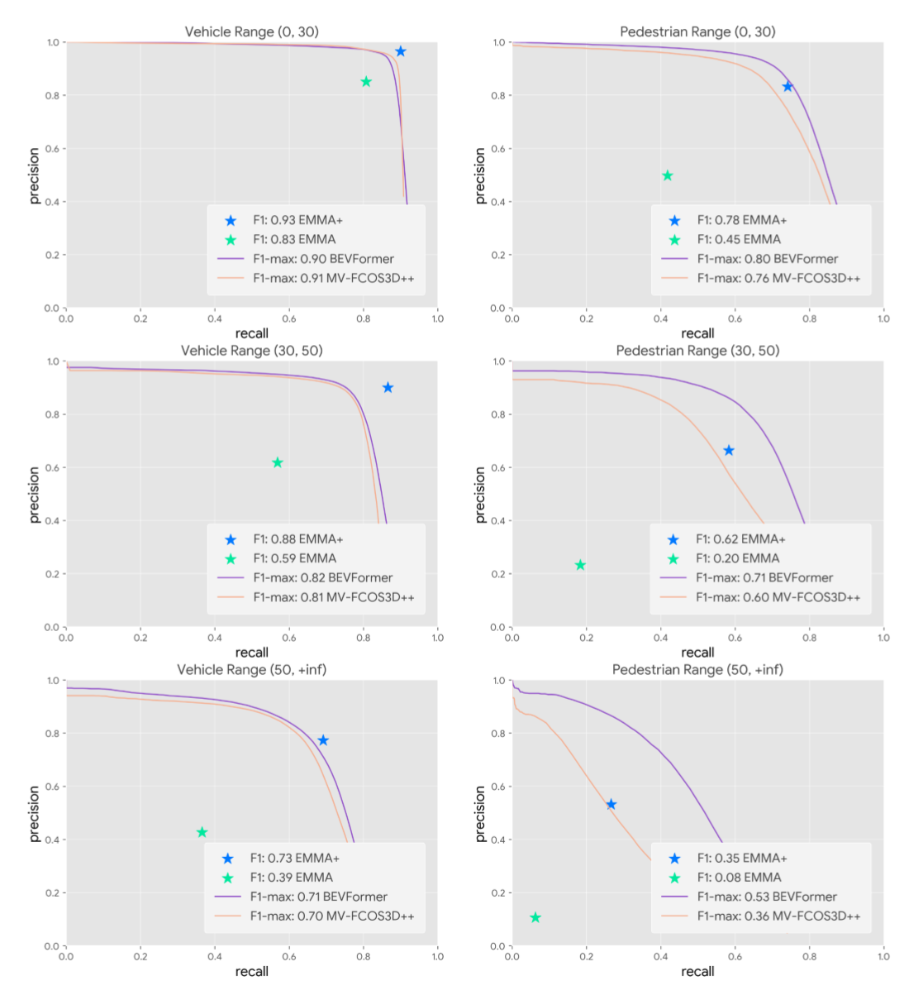
図11：標準の LET マッチング（Hung et al., 2024）を用いた WOD（Sun et al., 2020）におけるカメラ主体 3D 物体検出実験の距離別内訳。物体までの距離が大きくなるにつれて、EMMA+ とベースラインモデルとの性能差が縮小することが観察される。この現象は、ベースラインモデルと比べて EMMA が用いるカメラ入力の解像度が低い可能性によるものと考える。
図中ラベル：Vehicle Range (0, 30) / (30, 50) / (50, +inf)＝車両、距離範囲 (0, 30) / (30, 50) / (50, +inf)、Pedestrian Range＝歩行者、距離範囲、precision＝適合率、recall＝再現率、F1＝各手法の F1 値、F1-max＝曲線上の最大 F1
3.6 節では軌跡、検出、道路グラフの各タスクにわたる EMMA の多数の成功した予測を紹介したが、その限界を分析することも同様に重要である。今後の開発への洞察を提供するため、図12に、それぞれ異なる種類の誤りを示す 3 つの異なる失敗シナリオを示す。
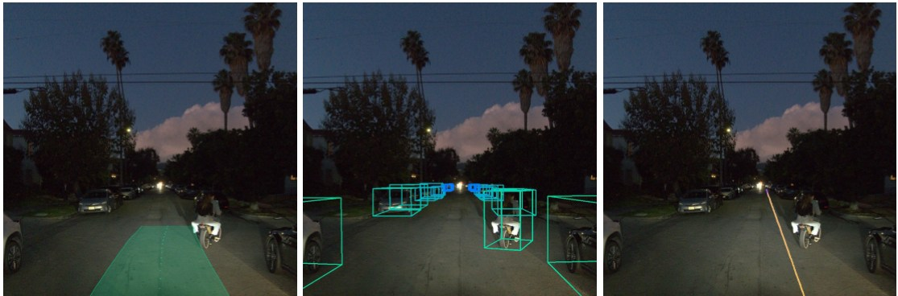
EMMA の予測軌跡は、バイクとの間隔が最適ではない。その後バイクがさらに右側へ進んだことで予測は結果的に妥当となったが、理想的な経路では最初からより大きな横方向のオフセットをとるべきであった。
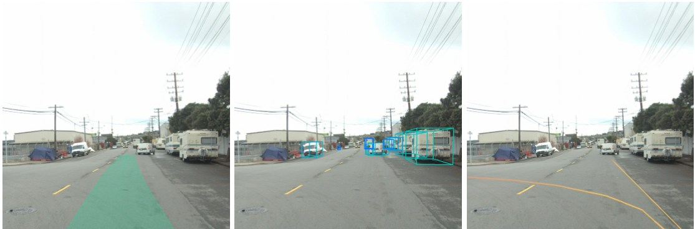
EMMA は遠方の対向車を検出できていないが、次のフレームでは正しく識別している。自車両が左へ寄る計画を立てているため、この 1 フレームの検出遅れは最適ではない。より早く検出していれば、より安全で制御された軌跡につながったであろう。
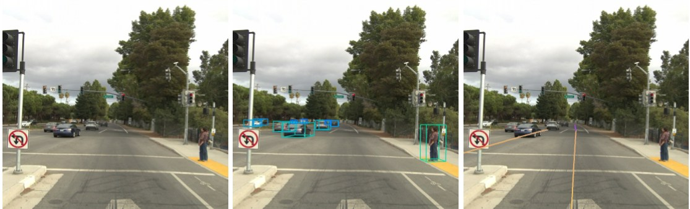
EMMA は直近の走行可能な車線を正しく識別しているが、道路のさらに先にある車線の合流を検出できていない。この見落としは、路面に描かれた矢印の劣化によるものかもしれない。
図12：EMMA の予測の失敗例。各行は、EMMA の予測に部分的な欠陥があったシナリオを含む。エンドツーエンド計画軌跡（左）、3D 物体検出（中央）、道路グラフ推定（右）である。
2.3 節と図2で示したように、EMMA はさまざまなプロンプトに基づいて所望の出力を生成できる。再現性を高めるため、表7に、使用した具体的なプロンプトと、それに対応するモデルの予測回答を示す。
| 画像 | プロンプトと回答 |
|---|---|
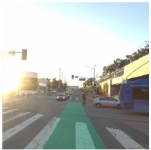 |
Prompt: Assume I am driving at the coordinate 0.0, 0.0. The high-level behavior attention is: go straight. The past trajectory under vehicle coordinate is: -4.09, 0.01 and -3.94, 0.01 and -3.71, 0.01 and -3.42, 0.01 and -3.05, 0.00 and -2.60, 0.00 and -2.07, -0.00 and -1.45, -0.00 and -0.76, -0.00 and 0.00, 0.00. The past ego velocity under vehicle coordinate is: 0.94, -0.01 and 1.29, -0.01 and 1.66, -0.01 and 2.04, -0.02 and 2.45, -0.02 and 2.88, -0.02 and 3.26, -0.02 and 3.65, -0.01 and 3.98, -0.00. The past ego acceleration under vehicle coordinate is: 0.32, -0.00 and 0.34, -0.00 and 0.37, -0.00 and 0.38, -0.00 and 0.40, -0.00 and 0.43, 0.00 and 0.38, 0.00 and 0.39, 0.01 and 0.34, 0.01. What is my future trajectory in next 5 seconds under vehicle coordinate? （プロンプト訳：私は座標 0.0, 0.0 で運転していると仮定する。高レベルの行動指示は「直進」である。車両座標系での過去の軌跡は … である。車両座標系での過去の自車速度は … である。車両座標系での過去の自車加速度は … である。車両座標系で、次の 5 秒間の私の将来軌跡は何か？） Answer: 0.83, 0.01 and 1.72, 0.01 and 2.67, 0.02 and 3.67, 0.04 and 4.73, 0.05 and 5.84, 0.07 and 6.95, 0.09 and 8.08, 0.11 and 9.23, 0.13 and 10.41, 0.15 and 11.62, 0.17 and 12.87, 0.19 and 14.15, 0.22 and 15.47, 0.24 and 16.80, 0.26 and 18.15, 0.27 and 19.52, 0.28 and 20.92, 0.28 and 22.36, 0.28 and 23.83, 0.28 and 25.34, 0.27 and 26.89, 0.26 and 28.49, 0.25 and 30.14, 0.23 and 31.83, 0.22 |
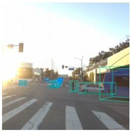 |
Prompt: What are the 3D bounding boxes for objects in the following list: vehicle, pedestrian, and cyclist? Describe the bounding boxes in the format of [center_x, center_y, bottom_z, width, length, height, heading, class], where heading is in radian, class in text, and other dimensions are in meter? （プロンプト訳：次のリストの物体、すなわち車両、歩行者、自転車の 3D バウンディングボックスは何か？ バウンディングボックスを [center_x, center_y, bottom_z, width, length, height, heading, class] の形式で記述せよ。heading はラジアン、class はテキスト、その他の寸法はメートル単位とする。） Answer: -12.91 -9.23 -0.21 12.99 3.21 3.45 -2.25 vehicle and 21.81 -4.15 -0.15 4.61 2.10 1.65 -2.18 vehicle and 25.61 -1.11 -0.12 1.89 0.86 1.86 -0.23 cyclist and 39.12 3.25 -0.13 4.39 2.13 1.79 3.14 vehicle and 45.51 3.18 -0.12 4.65 2.10 1.54 3.14 vehicle and 43.81 21.51 -0.01 4.71 2.19 1.51 -2.16 vehicle and 40.01 20.11 0.09 4.92 2.39 2.02 -2.17 vehicle and 44.81 3.16 -0.11 4.51 2.10 1.55 3.14 vehicle and 49.11 13.39 0.02 1.11 0.83 1.68 -0.05 pedestrian and 52.31 3.02 0.05 4.85 2.23 1.92 -3.14 vehicle and 51.11 15.41 0.05 1.12 0.85 1.78 -0.01 pedestrian and 62.51 3.35 0.49 4.51 2.15 1.85 -3.14 vehicle and 72.11 2.99 0.92 4.45 2.13 1.74 -3.13 vehicle and 79.21 3.41 1.19 4.41 2.14 1.72 -3.13 vehicle and 85.51 3.35 1.45 4.36 2.08 1.60 -3.13 vehicle and 85.11 11.11 1.41 4.49 2.15 1.76 3.11 vehicle and 92.21 3.51 1.69 4.45 2.18 1.90 -3.13 vehicle |
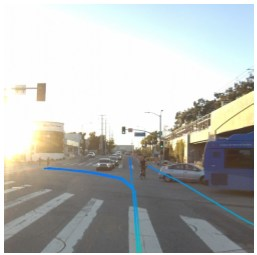 |
Prompt: My current position is 1.28, -0.00. Where are driveable lanes in front of me? Describe the lanes as a series of points relative to 0.00, 0.00? （プロンプト訳：私の現在位置は 1.28, -0.00 である。私の前方の走行可能な車線はどこか？ 車線を 0.00, 0.00 を基準とした点の系列として記述せよ。） Answer: (0.00, -0.11 and 10.00, -0.11 and 20.00, -0.11 and 30.00, -0.11 and 40.00, -0.11 and 51.11, -0.11 and invalid and invalid and invalid and invalid) valid ; (51.11, -0.11 and 61.10, -0.06 and 71.09, -0.01 and 81.08, 0.04 and 91.07, 0.09 and invalid and invalid and invalid and invalid and invalid) valid ; (0.00, -0.12 and 10.00, -0.19 and 15.11, -0.22 and 21.99, 0.62 and 27.72, 2.16 and 33.11, 4.65 and 38.02, 8.00 and 42.35, 12.05 and invalid and invalid) valid ; (0.00, -0.12 and 10.00, -0.13 and 17.11, -0.14 and 23.01, 0.58 and 28.76, 2.09 and 34.16, 4.56 and 39.07, 7.91 and 43.43, 11.95 and invalid and invalid) valid ; (0.00, -0.12 and 10.00, -0.13 and 16.11, -0.14 and 22.01, 0.55 and 27.76, 2.05 and 33.14, 4.55 and 38.00, 7.98 and 42.29, 12.09 and invalid and invalid) valid ; (0.00, -3.31 and 10.00, -3.25 and 20.00, -3.19 and 30.00, -3.13 and 40.00, -3.07 and 49.35, -3.01 and invalid and invalid and invalid and invalid) valid ; (invalid and invalid and invalid and invalid and invalid and invalid and invalid and invalid and invalid and invalid) invalid ... |
表7：使用した具体的なプロンプトと、それに対応するモデルの予測回答。見やすさのため、原表では数値を青、予測された区切り記号を赤で色分けしている。（訳注：プロンプトと回答はモデルの入出力そのものであるため原文のまま掲載し、プロンプトの訳を併記した。プロンプト訳では数値列を「…」で省略した。）
本文では、nuScenes の計画ベンチマークで最先端のエンドツーエンド動作計画を示した。また、WOD におけるカメラ主体の 3D 検出でも競争力のある性能を達成した。さらに、我々のジェネラリストの設定は、共同学習を通じて複数のタスクにわたる品質を向上させる。これらの有望な結果にもかかわらず、本研究の限界を認め、この基盤の上に構築し、今後の研究でこうした課題に対処するための方向性を提案する。
メモリと動画の能力：現在、本モデルは限られた数のフレーム（最大 4）しか処理できず、運転タスクに不可欠な長期的依存関係を捉える能力が制限されている。効果的な運転には、リアルタイムの意思決定だけでなく、長期記憶に基づいて変化するシナリオを予測し対応するための、長い時間範囲にわたる推論も必要である。モデルの長期推論能力を高めることは、今後の研究の有望な領域である。これは、メモリモジュールを統合するか、より長い動画系列を効率的に処理する能力を拡張することで達成でき、より包括的な時間的理解を可能にする可能性がある。
LiDAR およびレーダ入力への拡張：我々のアプローチは事前学習済み MLLM に大きく依存しているが、それらは通常 LiDAR やレーダの入力を取り込んでいない。これらの 3D センシングのモダリティを統合するようモデルを拡張するには、2 つの重要な課題がある。1) 利用可能なカメラデータと 3D センシングデータの量に大きな不均衡があり、その結果、3D センシングのエンコーダはカメラベースのエンコーダに比べて汎化性が低くなる。2) 3D センシングのエンコーダの開発は、まだカメラベースのエンコーダの規模や洗練度に達していない。これらの課題に対処する潜在的な解決策は、カメラ入力と慎重に整列させたデータを用いて大規模な 3D センシングエンコーダを事前学習することである。このアプローチは、モダリティ間のより良い相乗効果を促し、3D センシングエンコーダの汎化能力を大幅に向上させる可能性がある。
予測された運転信号の検証：本モデルは、物体検出や道路グラフ推定などの中間出力に依存せずに運転信号を直接予測できる。このアプローチは、リアルタイムおよび事後の検証の両方に課題をもたらす。我々は、ジェネラリストモデルが物体や道路グラフ要素といった人間が読める追加の出力を一括して予測でき、運転判断を思考連鎖の運転根拠でさらに説明できることを示した。しかし、経験的にはそれらが実際に一貫していることが多いと観察されているものの、これらの出力が常に一貫している保証はない。運転根拠の改善は、我々の今後の研究方向の 1 つである。
閉ループ評価のためのセンサシミュレーション：閉ループ環境でエンドツーエンド自動運転システムを正確に評価するには、包括的なセンサシミュレーションのソリューションが必要である。しかし、センサシミュレーションの計算コストは行動シミュレータよりもはるかに高いことが多い。この大きなコスト負担はエンドツーエンドモデルの徹底的なテストと検証を妨げうるが、効率的なセンサシミュレーション手法の分野は急速に進化し続けており、この負担を大幅に軽減する見込みがある。
より的を絞った正確な開ループ評価：既存の開ループ評価は計算コストが低い一方で、その結果は時に信頼できない。例えば、広く使われている nuScenes（Caesar et al., 2020）ベンチマークには、よく知られた限界がある。衝突率のような主要な指標は、BEV グリッドの解像度などのハイパーパラメータの選択に敏感である（Weng et al., 2024; Zhai et al., 2023）。さらに、そのシナリオの多くは計画の多様性に欠け、過去の軌跡を外挿するだけで自明に解ける。NAVSIM（Dauner et al., 2024）のような取り組みがこれらの脆弱性に対処し始めているが、このことは、より挑戦的で信頼できる開ループ評価フレームワークを開発する今後の研究の決定的な必要性を浮き彫りにしている。
車載展開の課題：自動運転にはリアルタイムの意思決定が求められるが、大規模モデルは推論レイテンシが大きいため、その展開には大きな課題がある。このため、性能と安全基準を維持しつつ、モデルを最適化するか、展開に適したよりコンパクトな形に蒸留する必要が生じる。
本文は EMMA アーキテクチャの確立に焦点を当てているが、このフレームワークはさまざまな確立された最適化手法を適用できる。この適応性を示すため、レイテンシを最適化した EMMA 構成で実験を行った。SARA-RT（Leal et al., 2024）のような戦略の導入、より短い行動系列の採用、明示的な推論連鎖の除去による簡素化などを取り入れることで、この派生版は 3 FPS の推論速度を達成し、UniAD の 1.8 FPS と比べて 67% の高速化となった。この予備的な結果は、中核となる EMMA アーキテクチャが、専門化された低レイテンシの派生版へと効果的に適応できる柔軟性を備えていることを裏付けている。モデルサイズ、効率、品質の間の繊細なバランスを実現することは、自動運転システムの実世界での展開を成功させるうえで極めて重要であり、今後の研究の重要な領域である。